|
Tian-Zhu Xiang is working as a researcher and Tech Lead of GeoAI at G42 Bayanat. Before that, he was a researcher at Inception Institute of Artificial Intelligence (IIAI) working with Dr. Fan Zhu and Prof. Ling Shao. He received his PhD from LIESMARS, Wuhan University in 2019, under the supervision of Prof. Gui-Song Xia and Prof. Liangpei Zhang. His research mainly focuses on computer vision, remote sensing and medical image analysis. Specifically, he is interested in camouflaged object segmentation, saliency detection, medical image segmentation and computational photography. tianzhu.xiang19@gmail.com Google Scholar ResearchGate Github |

|
News
Research Interests
-
Object Detection: Camouflaged Object Detection (COD), Aerial Object Detection
-
Visual Saliency: Multi-modal Salient Object Detection (RGB-D/RGB-T SOD), RS SOD, CoSOD
-
Computational Photography: Image Alighment & Stitching, Image Fusion
-
Medical Image Segmentation: Cell Segmentation, Polyp Segmentation
-
Remote Sensing Scene Understanding: RS SOD, Image Fusion, Aerial Object Detection, Shadow Detection
Selected Publications | All Paper List
You can also find the full list on Google Scholar. *: Corresponding, ^Equal contributions.
| 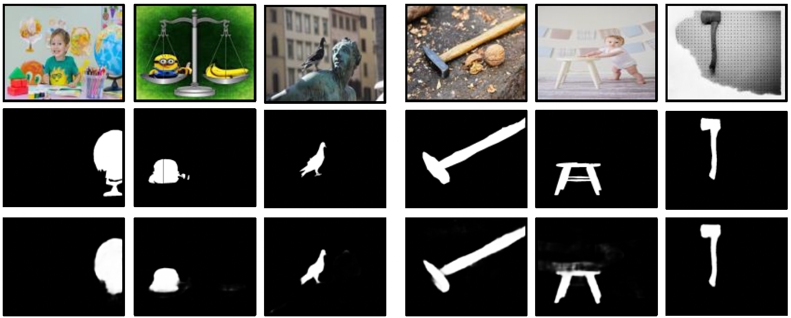 |
Memory-aided Contrastive Consensus Learning for Co-salient Object Detection
@inproceedings{zheng2023memory,
title={Memory-aided Contrastive Consensus Learning for Co-salient Object Detection},
author={Peng Zheng, Jie Qin, Shuo Wang, Tian-Zhu Xiang, Huan Xiong},
booktitle={AAAI Conference on Artificial Intelligence},
pages={},
year={2023},
}
|
| 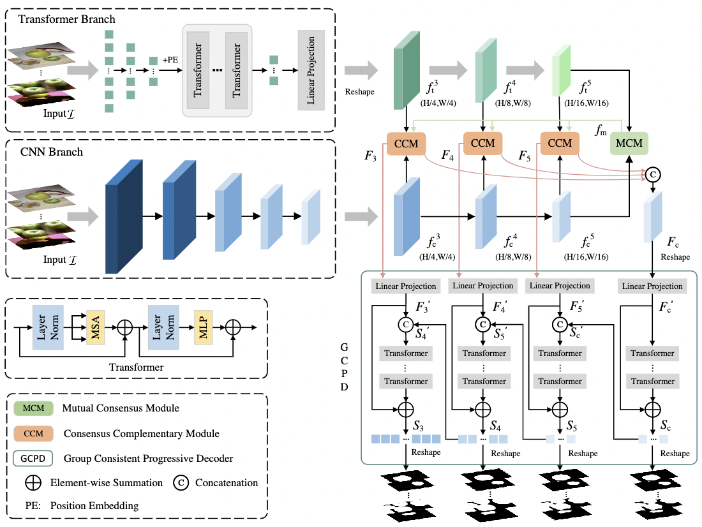 |
TCNet: Co-Salient Object Detection via Parallel Interaction of Transformers and CNNs
@article{ge2022tcnet,
title={TCNet: Co-Salient Object Detection via Parallel Interaction of Transformers and CNNs},
author={Yanliang Ge and Qiao Zhang and Tian-Zhu Xiang and Cong Zhang and Jing Zhang |
| 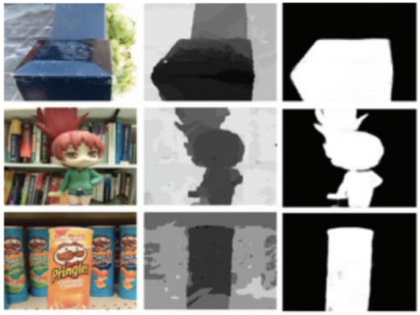 |
Cross-modal Hierarchical Interaction Network for RGB-D Salient Object Detection
@article{bi2022cross,
title={Cross-modal Hierarchical Interaction Network for RGB-D Salient Object Detection},
author={Bi, Hongbo and Wu, Ranwan and Liu, Ziqi and Zhu, Huihui and Zhang, |
| 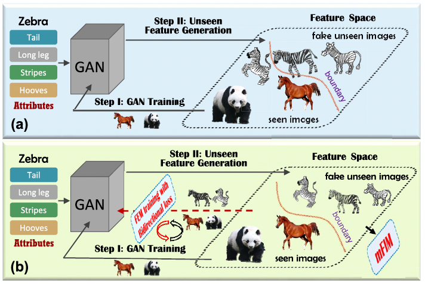 |
Leveraging Balanced Semantic Embedding for Generative Zero-Shot Learning @article{xie2022leveraging,
author={Guo-Sen Xie and Xu-Yao Zhang and Tian-Zhu Xiang and Fang Zhao and Zheng Zhang |
| 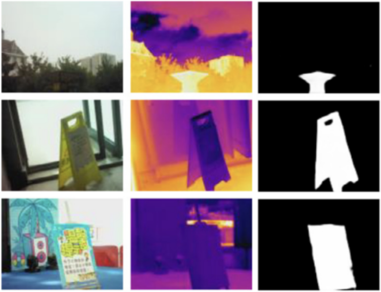 |
PSNet: Parallel Symmetric Network for RGB-T Salient Object Detection @article{bi2022psnet,
title={PSNet: Parallel Symmetric Network for RGB-T Salient Object Detection},
author={Bi, Hongbo and Wu, Ranwan and Liu, Ziqi and Zhang, Jiayuan and Zhang, |

|
Scribble-based Boundary-aware Network for Weakly Supervised Salient Object Detection in Remote Sensing Images @article{huang2022scribble,
author={Zhou Huang and Xiang, Tian-Zhu and Huai-Xin Chen and Hang Dai},
journal={ISPRS Journal of Photogrammetry and Remote Sensing},
title={Scribble-based Boundary-aware Network for Weakly Supervised |
| 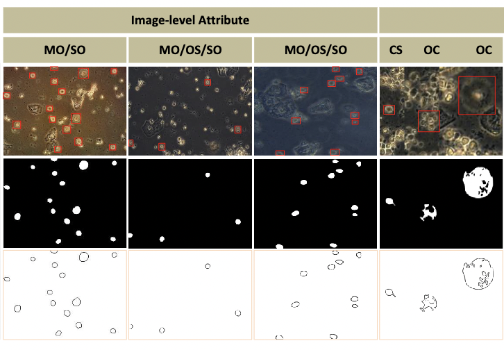 |
Trichomonas Vaginalis Segmentation in Microscope Images @inproceedings{li2022trich,
title={Trichomonas Vaginalis Segmentation in Microscope Images},
author={Li, Lin and Liu, Jingyi and Wang, Shuo and Wang, Xunkun and Xiang, Tian-Zhu},
booktitle={International Conference on Medical Image Computing and |
| 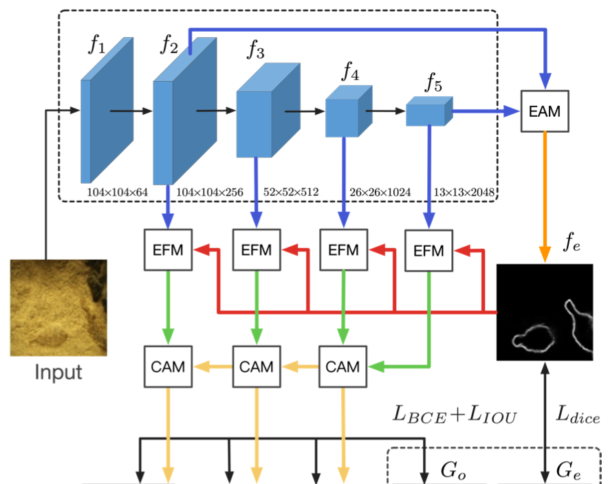 |
Boundary-Guided Camouflaged Object Detection @inproceedings{sun2022boundary,
title={Boundary-Guided Camouflaged Object Detection},
author={Yujia Sun, Shuo Wang, Chenglizhao Chen and Tian-Zhu Xiang},
booktitle={International Joint Conference on Artificial Intelligence (IJCAI)},
pages={1335--1341},
year={2022}
}
|
| 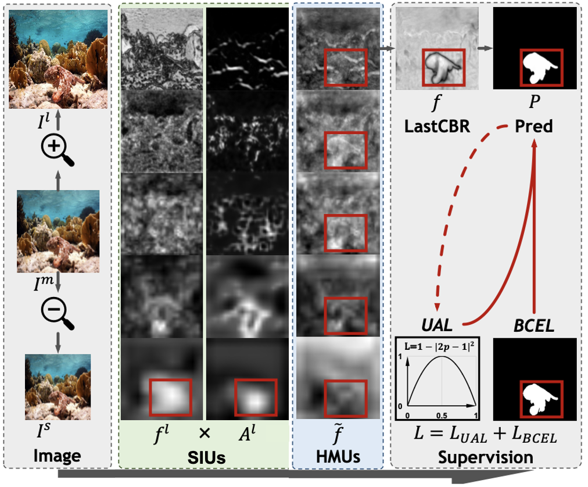 |
Zoom In and Out: A Mixed-scale Triplet Network for Camouflaged Object Detection @inproceedings{pang2022zoom,
title={Zoom In and Out: A Mixed-scale Triplet Network for Camouflaged Object Detection},
author={Youwei Pang, Xiaoqi Zhao, Tian-Zhu Xiang, Lihe Zhang and Huchuan Lu},
booktitle={Proceedings of the IEEE/CVF Conference on Computer Vision and Pattern Recognition (CVPR)},
pages={2160--2170},
year={2022}
}
|
| 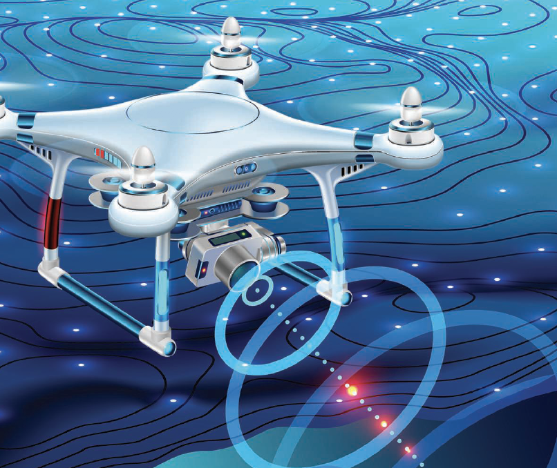 |
Mini-Unmanned Aerial Vehicle-Based Remote Sensing: Techniques, applications, and prospects @article{Xiang2019MUAV,
author={Xiang, Tian-Zhu and Xia, Gui-Song and Zhang, Liangpei},
journal={IEEE Geoscience and Remote Sensing Magazine},
title={Mini-Unmanned Aerial Vehicle-Based Remote Sensing: |
| 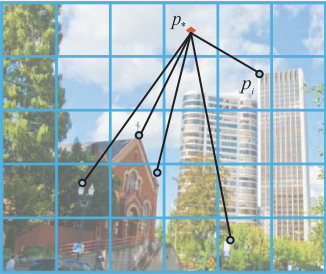 |
Image stitching by line-guided local warping with global similarity constraint @article{xiang2018image,
title={Image stitching by line-guided local warping with global similarity constraint},
author={Xiang, Tian-Zhu and Xia, Gui-Song and Bai, Xiang and Zhang, Liangpei},
journal={Pattern recognition},
volume={83},
pages={481--497},
year={2018},
publisher={Elsevier}
}
|
| 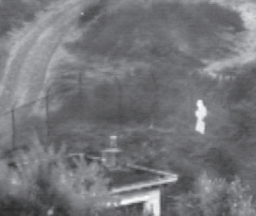 |
A Fusion Algorithm for Infrared and Visible Images Based on Adaptive Dual-channel Unit-linking PCNN in NSCT Domain
@article{xiang2015fusion,
title={A fusion algorithm for infrared and visible images based on |
Service
Journal Reviewer:
ISPRS Journal of Photogrammetry and Remote Sensing
IEEE Transactions on Image Processing (IEEE T-IP)
IEEE Transactions on Multimedia (IEEE T-MM)
Pattern Recognition (PR)
Computer Graphics Forum (CGF)
Neurocomputing
Applied Intelligence
Pattern Recognition Letters
……
Program Committee:
IEEE/CVF Computer Vision and Pattern Recognition Conference (CVPR), 2023
AAAI Conference on Artificial Intelligence (AAAI), 2022
International Joint Conferences on Artificial Intelligence (IJCAI), 2021